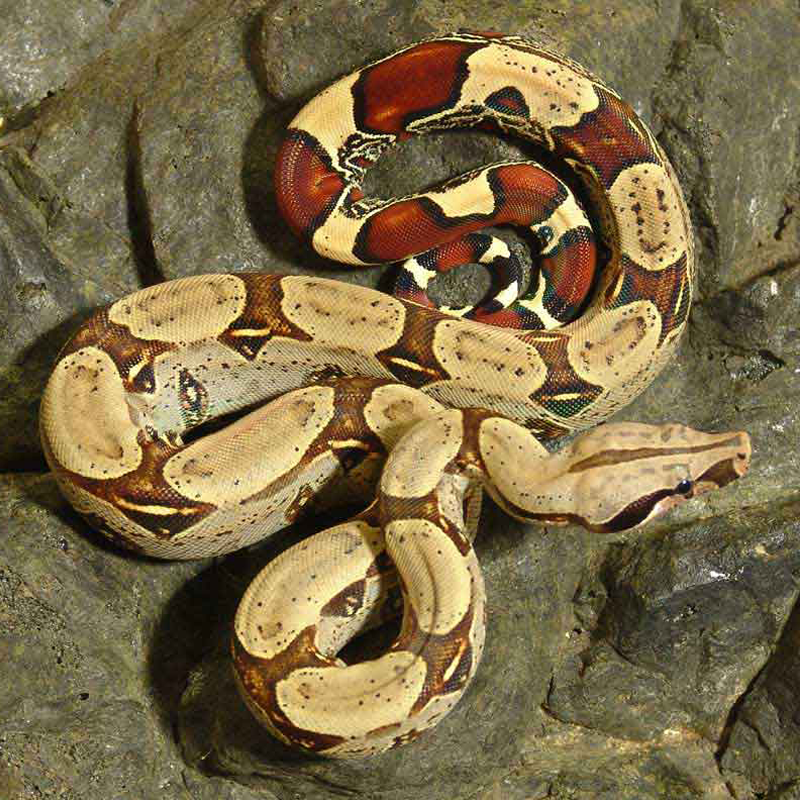

×
THE QUETZAL
Pharomachrus Mocinno
The Quetzal is a strikingly colored bird; considered one of the world’s most beautiful birds.
Quetzals live in the warm parts of Central and South America. In particular, the resplendent quetzal can be found between Southern Mexico and Panama. It lives in the heavy tropical highland rain forests of the region.
×
THE JAGUAR
Panthera Onca
Jaguars are the largest of South America’s big cats and the third largest cats in the world. Their fur is usually tan or orange with black spots, called “rosettes” because they are shaped like roses.
The jaguar is crepuscular, meaning that their peak activity is around dawn and dusk. Unlike most cats, jaguars do not avoid the water; in fact, they are very good swimmers. Rivers provide preys for them like fish, turtles, or caimans. They eat a diet rich in meat and fish.
Jaguars are the second strongest of all mammals. Their short, stocky limb structure makes them adaptable to climbing, crawling, and swimming. Their jaw is extremely powerful and they eat a variety of animals including birds, eggs, capybaras, tapirs, turtles and alligators.
The Mayas had great respect and reverence for the jaguar, which they called balam. Jaguars were a symbol of power and strength and were believed to act as mediums for communication between the living and the dead. The jaguar was the patron deity of Tikal - one of the largest Maya civilization sites in Guatemala.
LEARN MORE

×
THE SLOTH
Bradypus Pygmaeus
Sloths are known for slowness of movement and for spending most of their lives hanging upside down in the trees of the tropical rainforests of Central and South America. They are the world’s slowest mammal; it takes sloths about a minute to climb 6 to 8 feet.
Sloths are solitary creatures that rarely interact with one another. Captive sloths typically sleep for 15 to 20 hours per day.
Sloths leave trees only once a week, to use the bathroom, and they sleep curled up or hanging upside-down. Sloth’s long curved toe claws, and even longer arms, help them live in trees - their long toe claws hook onto branches, and their long arms wrap around the tree trunks for climbing or resting.
Sloths are herbivores, meaning their diet is based off plants and leaves. The plants they eat are hard to digest, that it can take them up to one month to digest a single meal. As their leafy diet is not very nutritious, they don’t get much energy from it and can be the reason for their sluggish lifestyle.
LEARN MORE

×
THE RED-TAILED BOA
Boa Constrictor
Boa Constrictors are considered by some the world’s most beautiful snakes. They come in many colors including tan, pink, red, green or yellow and their skins are marked with intricate patterns.
They live in Central and South America and prefer rainforest and wooded areas because they live in old logs or burrows. Although Boa Constrictors can swim, they usually stay on land.
Their jaws are lined with small, hooked teeth so they can grab and hold their prey while they wrap their bodies around their victim, squeezing them until they suffocate. They eat almost anything they can catch, including animals like birds, monkeys, and wild pigs. Their jaws can stretch very wide to swallow their large preys whole.
Boas generally live on their own, and do not interact with any other snakes unless they want to mate. Boa Constrictors strike when they perceive a threat. Species from Central America are more easily provoked, hissing loudly and striking repeatedly when disturbed. They are particularly unpredictable during their shed cycle, as the substance that helps them shed their skin makes their eyes opaque, restricting their view and causing them to be more defensive.
LEARN MORE